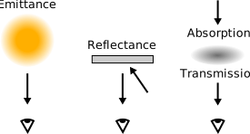
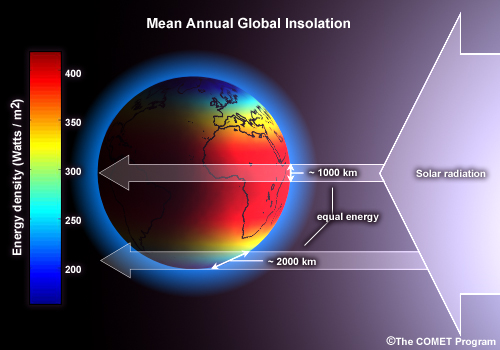
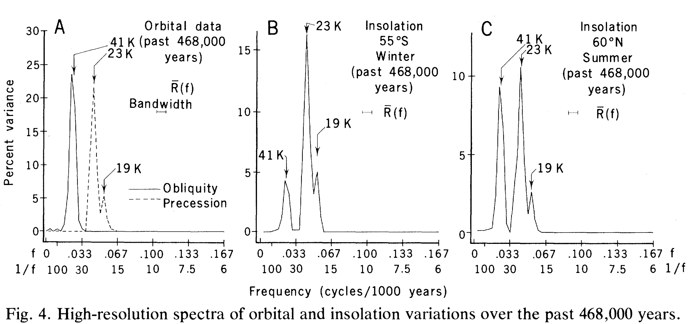
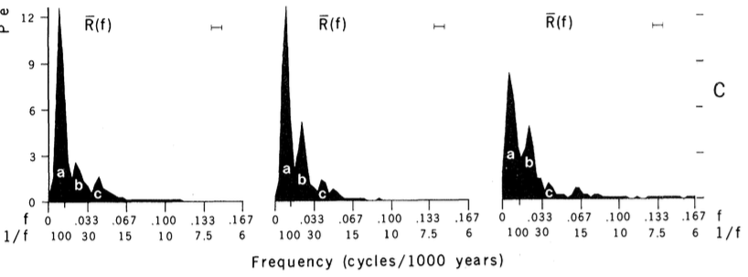
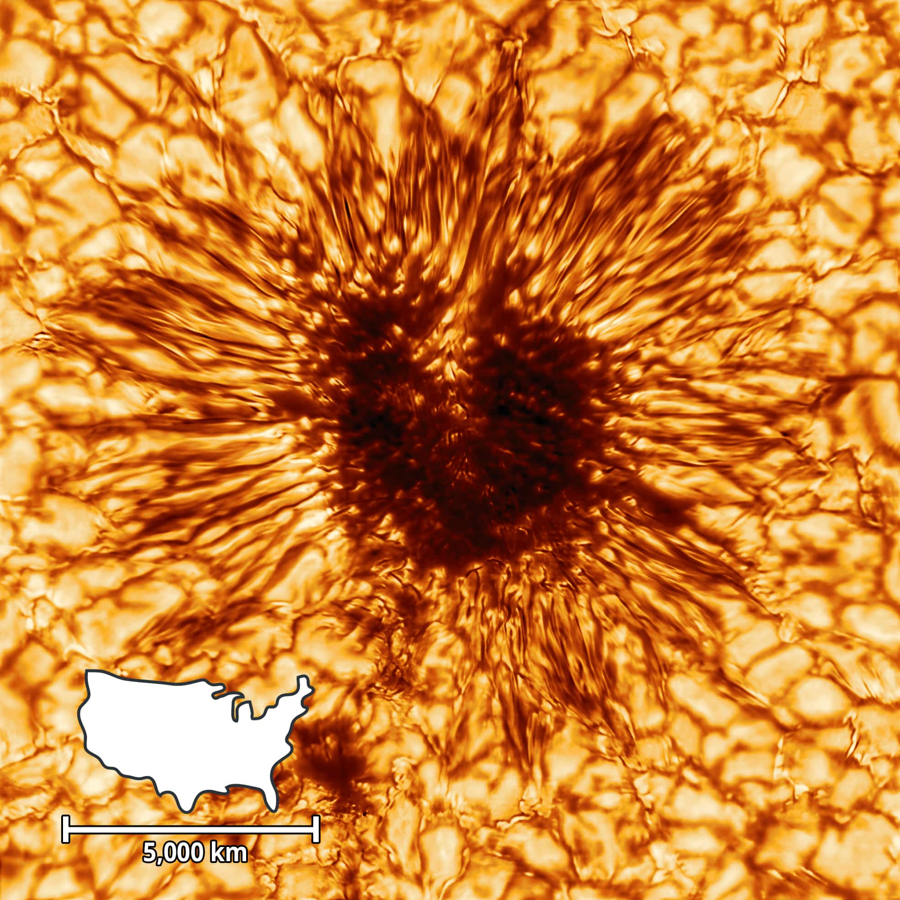
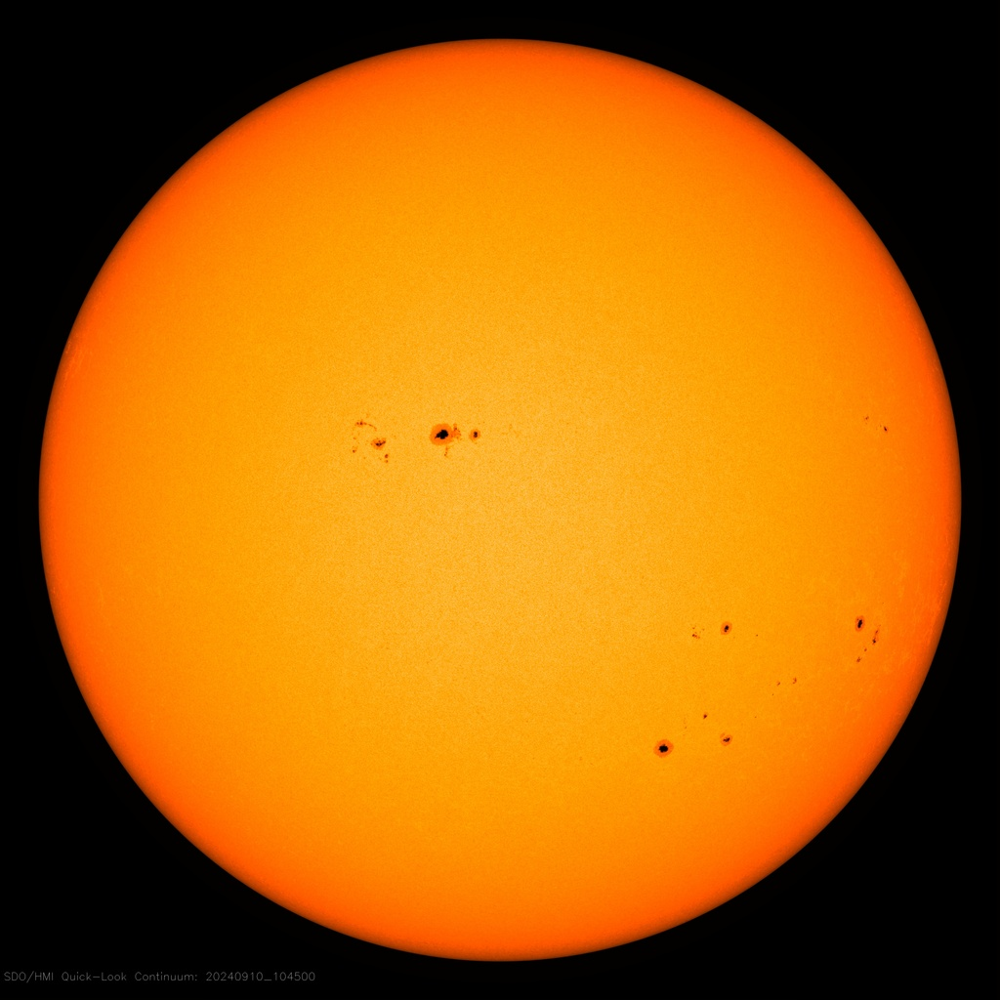
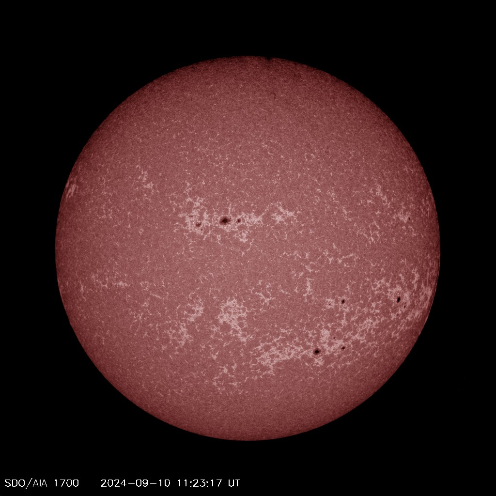

(Astro)Physics of the Earth system
Week
GEOS 3410
Week Schedule
Tuesday
- Wrap-up Earth system
- Phases of matter and energy
- Electromagnetic radiation
Thursday
- EM, cont.
- Orbits & obital cycles
- The Sun & solar variability
Outside of class
- Complete/self-grade quantitative skills packet & meet with me, by Friday
- Lab 1 due 11:59 pm on Friday
Phases of matter
Sensible & latent heat
Electromagnetic Radiation
Electromagnetic Radiation

Behaves both like a …
- wave: wavelength (λ), frequency (f)
- particle: photons with discrete energy, E
\[\begin{aligned}
\text{speed of light}~~ (m/s) \qquad c &= \lambda f
\\
\text{energy}~~(J) \qquad E &= hf
\\
\end{aligned}\]
$$
\text{where} \qquad c = 3 \times 10^8~\text{m/s}, \qquad h = 6.67 \times 10^{-34}~\text{J~s}
$$
Electromagnetic spectrum

Behavior of light
Thermal radiation
An idealized scenario: the physical blackbody
| Perfect absorber | absorbs all incident radiation (α=0) |
|---|---|
| Ideal emitter | emission depends only on temperature |
| Diffuse emitter | emits evenly in all directions |
Blackbody emission is a fuction of temperature

Total flux
(Stefan-Boltzmann law) \[\begin{aligned} F = \sigma T^4 \end{aligned} \]… where $\sigma \approx 5.67 \times 10^{-8}~\text{W}~\text{m}^{-2}~\text{K}^{-4}$ (Stefan-Boltzmann constant)
Peak wavelength of emission
(Wien's displacement law) \[\begin{aligned} \lambda_{max} = \frac{b}{T} = \frac{0.0029~m\cdot K}{T} \approx \frac{3~mm\cdot K}{T} \end{aligned} \]
Why do we care about thermal emission?
Calculate the peak wavelength of blackbody emission for …
- The Sun: T = 5600 K ≈ 6000 K ☀️
- Saturn: T = 135 K ≈ 150 K 🪐
- Earth: T = 288 K ≈ 300 K 🌏
What happens to thermal emission when we warm an object?
Planck response
Spheres, radiation, and space

Spheres, radiation, and space

The solar radiant flux (W/m2) at a given distance d from the Sun's core is the solar luminosity L (W) spread over the area of a sphere.
How does incident flux $F$ scale with distance $d$ from the Sun?
$$F \propto \frac{1}{d^2}$$
Inverse square law
The solar constant
The solar flux at the top of Earth's atmosphere: $$G_{SC} = 1361~\text{W}~\text{m}^2$$ But, the average insolation of Earth's surface is ~340 W/m2
\[\begin{aligned}
A_{disc} & = \pi r^2 \\
A_{sphere} & = 4 \pi r^2
\end{aligned}\]
Distribution of insolation
Orbits & orbital cycles
Planets (like Earth) orbit about their star and rotate about a spin axis.

Axial Tilt / Obliquity
Current obliquity ~ 23.5°
Tilt, Tropics & Circles

Obliquity and precession cycles
Obliquity: 41 kyr period,
22.1–24.5°
Axial Precession: 26 kyr period
Elliptical orbits have eccentricity
circle → e = 0 line → e = 1

 Current e = 0.0167
Current e = 0.0167
Eccentricity cycles
Periods: 95 kyr, 124 kyr, 405 kyr
(mostly interactions with Jupiter and Saturn)
Milankovitch (orbital) cycles
| Cycle | Effect |
|---|---|
| Obliquity | Seasonality – warmer/cooler winters and summers |
| Eccentricity | Seasonality – strength of seasonal changes around perihelion & aphelion. |
| Precession | Season during perihelion |


Milutin Milanković crunched numbers on insolation (1910–1940)
Why do we care?

Quasiperiodic (periodic-ish) climate cycles
Spectral analysis of orbital records
Spectral analysis of climate records
All together now!

Cluster Reflection Time!
- Why can't orbital cycles account for modern climate change?
- Orbital cycles typically cause minor changes in insolation. So how can they drive glacial-interglacial cycles?
- Why do we care so much about the Northern Hemisphere?
- Glaciers (ice sheets) form from the accumulation of ice over many years. What will have a larger effect — colder winters or colder summers?
- Lingering questions.

{kind=link}
{kind=link}
{kind=link}
{kind=link}
{kind=link}
The Sun
The Sun
Solar structure
- Plasma (ionized gas)
- Thermonuclear core
- Outer convective surface
- We see the photosphere, where the atmosphere becomes opaque

Solar magnetic field

The Sun is an ionized fluid!
Solar magnetic field
The Sun is an ionized fluid!


{kind=link}
Magnetic activity → sunspots
Magnetogram

Visible light intensity

Chromosphere

Solar cycle
~11-year cycle between low and high solar activity
Solar cycle over time
 Solar irradiance varies by ~0.1% over the solar cycle
Solar irradiance varies by ~0.1% over the solar cycle
{kind=link}
Sunspot variability and modern climate
Can we blame sunspots?
Lab this afternoon in MMS 273
Lab 1 due tomorrow (Friday) by 11:59pmNext Week ()
- Readings: Syllabus / Canvas
- Meet with me on quantitative skills ASAP
- Coming up: 🌎 Radiative 🌍 forcing 🌏